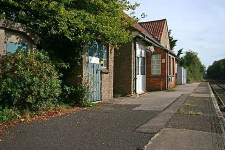

Besondere Berichte
Nachfolgend ein kleiner Auszug aus meinen insgesamt über 200 Tourenberichten bei hikr.org, verteilt über die Jahre von 1998 bis in die Gegenwart. Nebst Berichten zu einigen langen und anspruchsvollen Wanderungen sind es vor allem solche zu geschichtlich besonders interessanten Gebieten mit entsprechenden Hintergrundinformationen.


